| 日付 | 2015年9月19日（土） - 2015年9月23日（水） | ||||||
|---|---|---|---|---|---|---|---|
| 山域 | 東北の山 | ||||||
| メンバー | 家族（妻、長女・4歳、長男・2歳） | ||||||
| 山行形態 | 子連れ4泊5日ホテル泊 | ||||||
| アクセス | 車、バス、ロープウェイ、タクシー | ||||||
| ルート (Map1) |
|
今年は6年振りのシルバーウィーク。
5日間も休みがあるので、どこか遠くに行こうということになり、
青森県の八甲田山に行ってみることにする。
片道移動だけで1日かかるため、5連休くらいないと行けない場所だ。
GWは雪に覆われている地域だけに、今回の貴重な連休を最大限に活用する。
1日目
本日の宿泊地、民宿 桂月に到着する。
首都高では息子が車酔いで嘔吐、東北道では追突事故に合い、
十和田ICでは息子がシートベルト不着用で警察に捕まり、と散々な移動となってしまった…
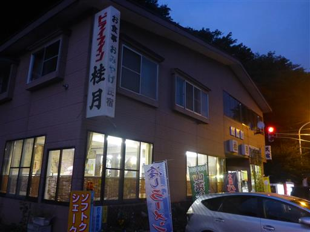
もう日が暮ている。本日は移動だけの一日だった。
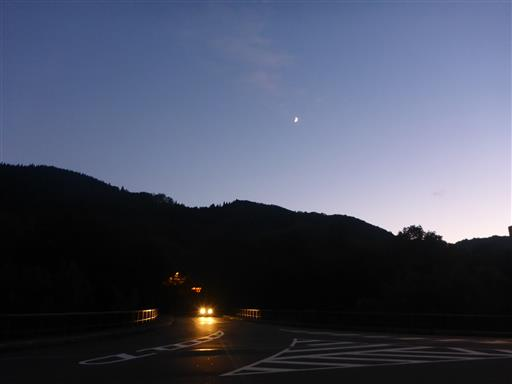
2日目
本日の天気予報は今一だったが、空を見るとそこそこ晴れている。
今日は奥入瀬渓流を歩く予定だ。渓流館のガランとした駐車場に車を停める。
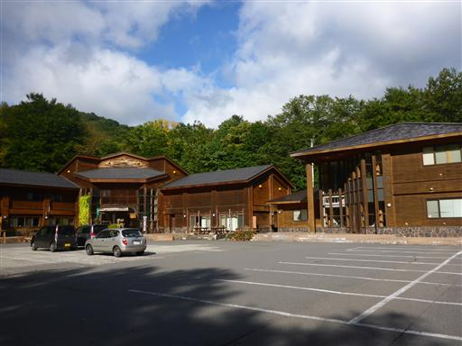
風が吹いて落ち葉が舞い落ちる。もう秋の景色だ。
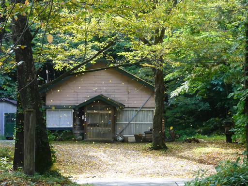
奥入瀬渓流は十和田湖から流れ下る14kmの渓流だ。
軽く考えていたが、よくよく考えてみると結構長い道のりだ。
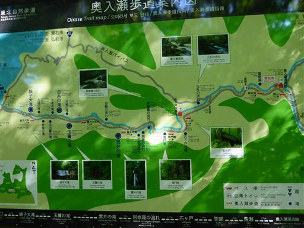
早速、川沿いの道を歩き始める。

周囲にはトクサが多い。シダの仲間だ。
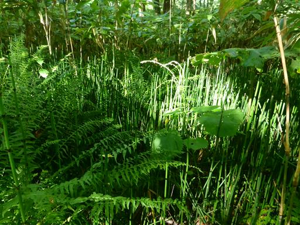
木が他の木の幹に巻き付いて、めり込んでいる。
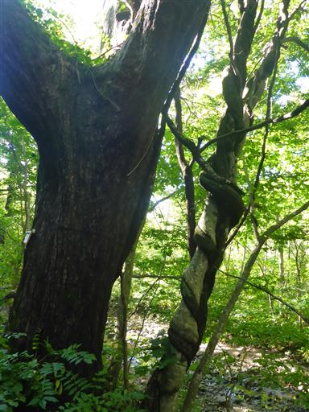
奥入瀬渓流と並行して、ずっと国道102号が走っている。
右に川、左に車道でちょっと圧迫感がある。バイクが走ると結構うるさい。
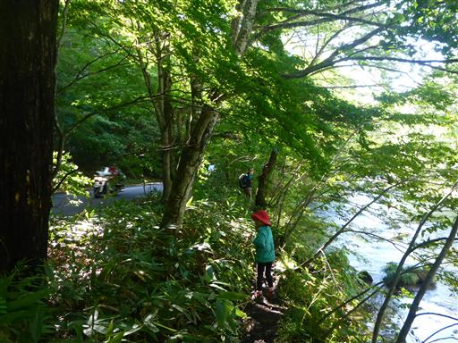
川の水は濁っていて、さほどきれいではない。
先日降った雨の影響だろうか？
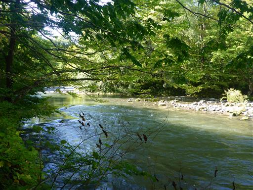
川沿いに立つ大木。昔からの景勝地だけあって、よく自然が保たれている。
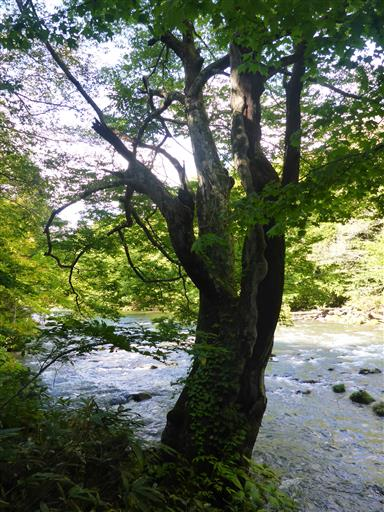
所々で遊歩道が無くなり、車道を歩く必要がある。
車道に出なくても良いように、遊歩道を整備してほしいところだ。
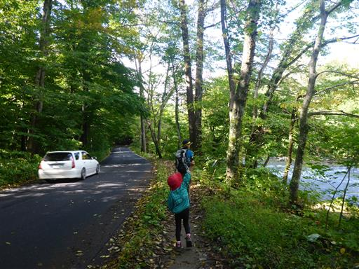
渓谷が広い場所は、森の中に入って行く。
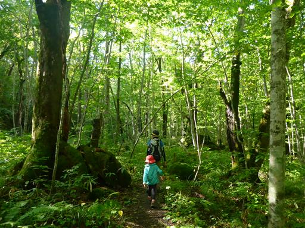
辺りは苔が多い。
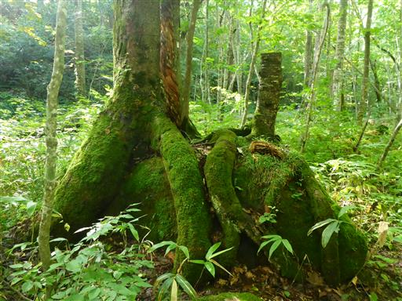
全面、苔に覆われた丸い石。
苔の多いところが、奥入瀬渓流の1つの特徴らしい。
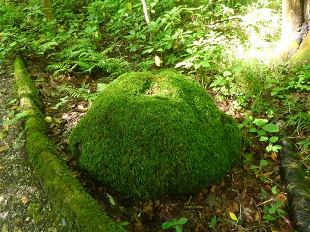
不思議な形の赤い実がなっている。
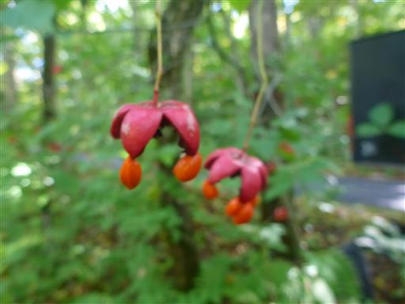
足元にはトチの実がたくさん落ちている。
子供達はトチの実を拾って遊んでいる。国立公園の特別保護地区なので、本当は禁止なのだが…
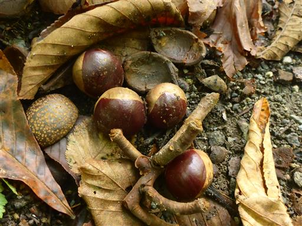
比較的新しい橋を渡る。モミジの葉が美しい。
紅葉の季節は賑わいそうだ。
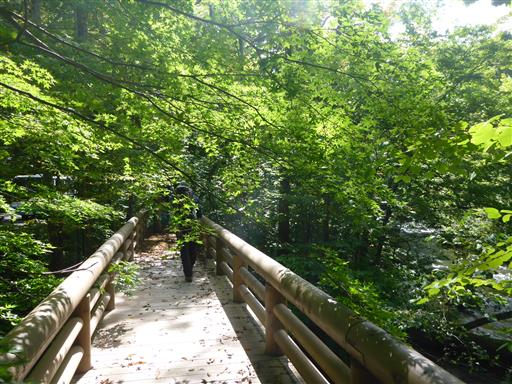
美しい川の流れ。一面緑に覆われている。

川の中にある岩の上に植物が生えている。
奥入瀬渓流は支流が少なく、ほとんどが十和田湖から流れ下る水のため、
大雨でも水位が上がることが無い。そのため岩の上の植物が流されない。
これが奥入瀬特有の景観を生み出しているらしい。
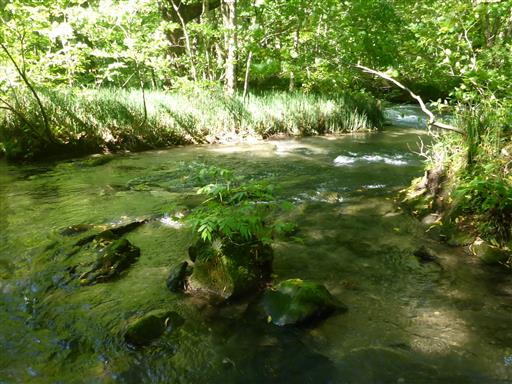
石ヶ戸休憩所に到着。ベンチに座っておやつを食べる。
行程はようやく4割を消化。娘はすでに退屈し始めている。
ここから先に見所が多いため、石ヶ戸から歩き始めればよかったと後悔する。
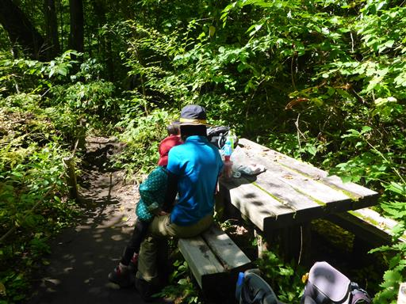
ここは駐車場、バス停、トイレ、売店などが整備されている。
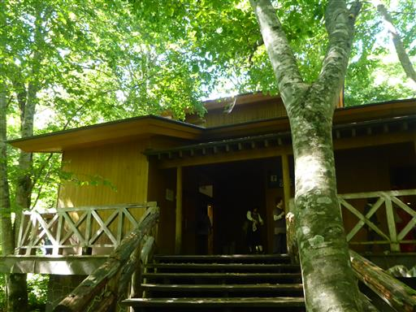
一際目立つ大木が川沿いに立っている。
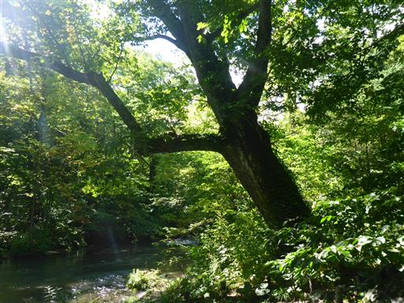
石ヶ戸。石でできた小屋という意味だ。
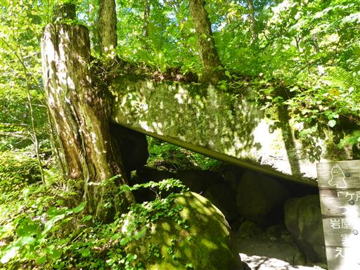
川岸に下りられるところがあったので、少し川で遊ぶ。
だいぶ上流に来たので、先ほどよりも水がきれいになっている。
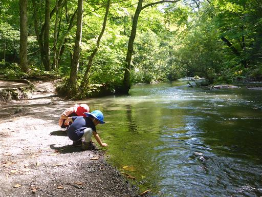
石ヶ戸を過ぎると歩いている人の数が増えてくる。
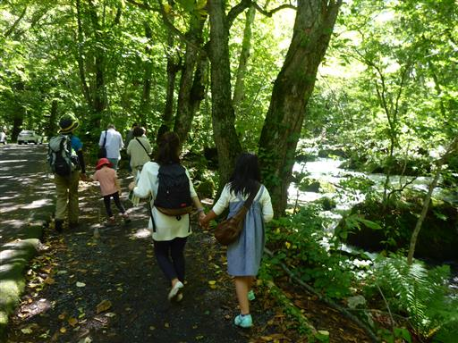
馬門岩。立派な岩壁だ。
道を作るために人工的に削ったものではないのだろうか？
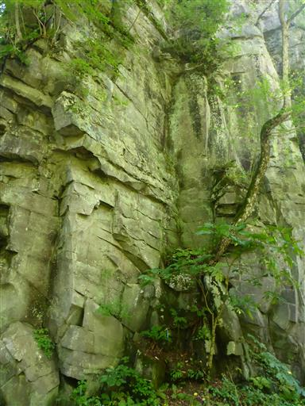
阿修羅の流れ。比較的穏やかな奥入瀬渓流が急流になるところだ。
奥入瀬渓流を代表する名スポットだ。
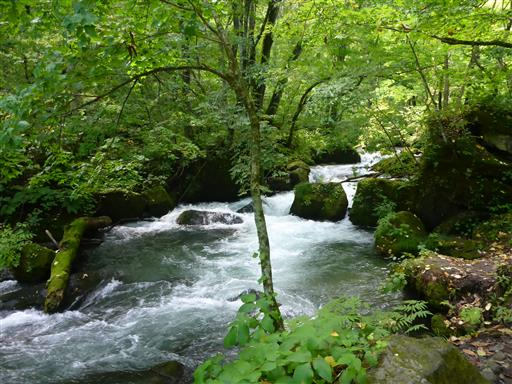
再び川は穏やかになる。確かに川の中のあらゆる岩に木や草が生えている。
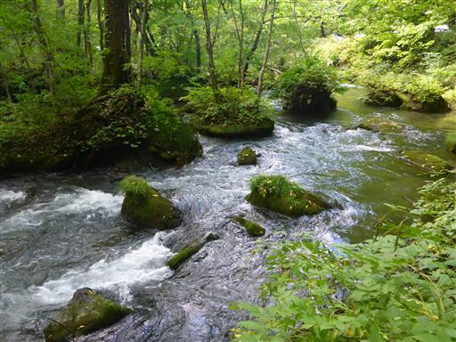
千筋の滝に到着。ずいぶん地味な滝だ。
景色は冴えないが、疲れた娘がベンチに座ったため、ここで昼食をとる。
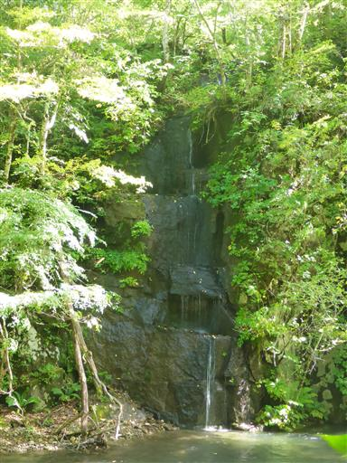
千筋の滝から少し歩くと雲井の滝に到着する。
落差20mで、奥入瀬渓流沿いで見られる滝では一番立派だ。
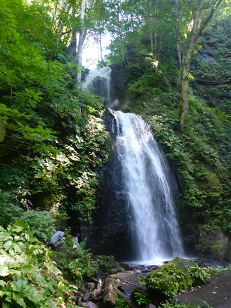
古い手摺が苔に覆われている。
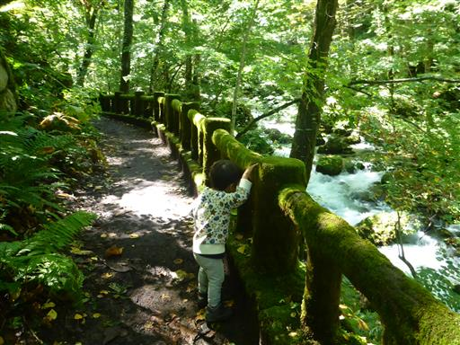
この辺りは大木がたくさん並んでいる。
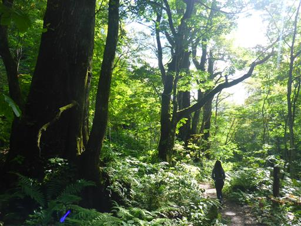
対岸に白糸の滝が見える。
大きな滝はないが、あちらこちらで滝が見られる。
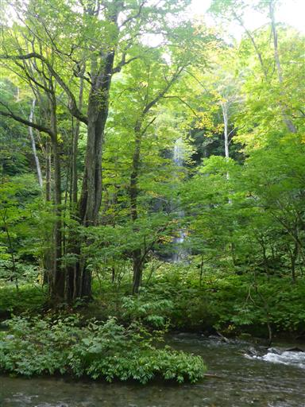
古ぼけた橋を渡る。真新しい橋よりも周囲の風景に馴染んでいる。
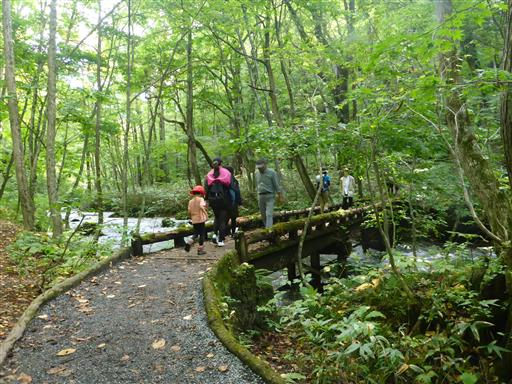
九段の滝。名前の通り9つの段がある。
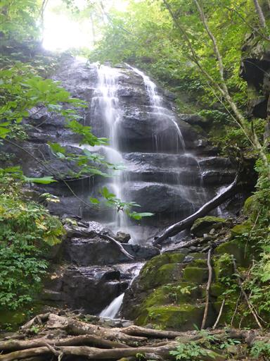
銚子大滝が見えてきた。周囲には観光客が多い。
ずっと車道と並行しているため、観光客が気軽に美しい渓流を眺められるのも奥入瀬渓流の特徴だろう。
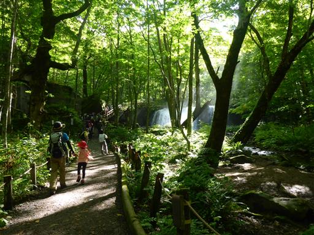
幅20m、高さ7mで奥入瀬渓流にかかる唯一の滝だ。水量が多く非常に迫力がある。
この滝があるため魚が遡れず、昔は十和田湖に魚がいなかったらしい。
今では人の手で放流された様々な魚が住みついている。
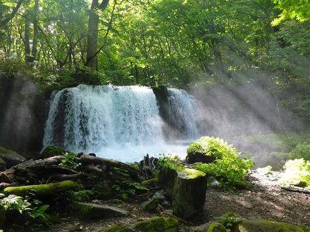
銚子大滝から先の遊歩道は一部閉鎖されている。
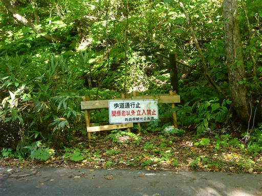
仕方なく車道を歩く。この辺りを歩いている人はほとんどいない。
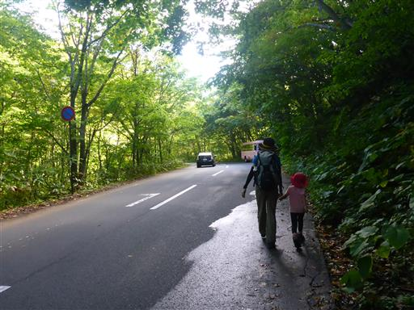
子ノ口水門。この水門で水量を調節しているようだ。
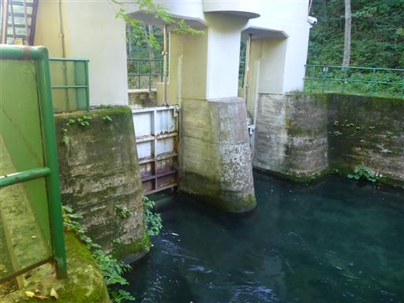
水門の上流は藻が美しい。
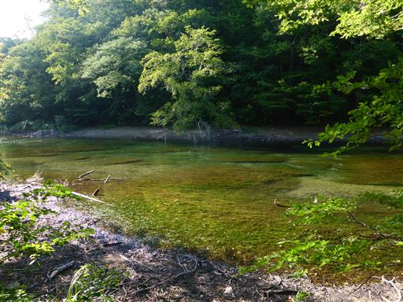
子ノ口橋が見えてきた。
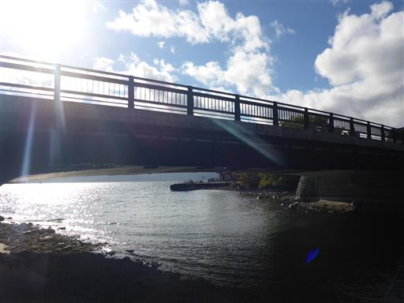
ついに十和田湖に到着。橋から十和田湖を望む。
コースタイム4時間半でさほど長いわけではないのだが、娘を励ましながら歩いていると非常に長く感じた。
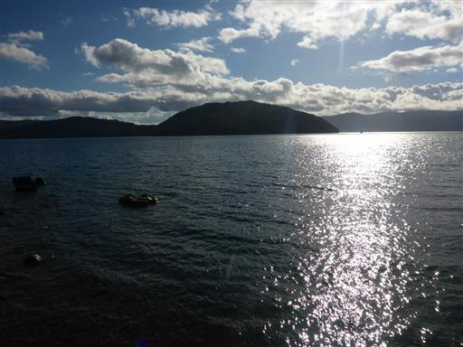
反対側の長かった奥入瀬渓流を眺める。
奥入瀬渓流は派手さはないが素朴で美しい渓流だった。
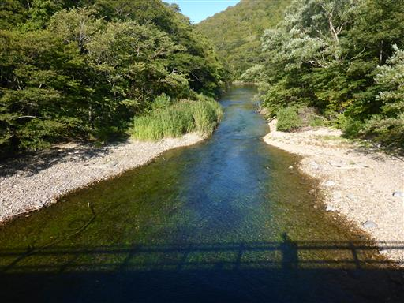
子ノ口バス停。ここから駐車場までバスで戻る。
本日の宿泊場所はここのすぐ側なのだが、娘の昼寝をさせるために全員でバスに乗り込む。
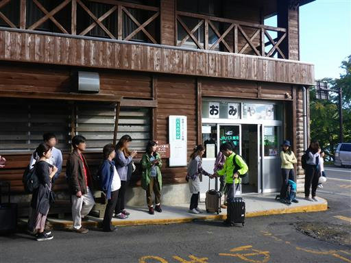
歩いてきた道と並行する車道を反対方向にバスは進んでいく。
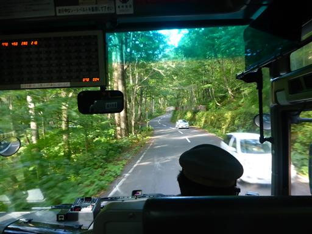
車道沿いにあり、遊歩道からは見られなかった玉簾の滝をバスから眺める。
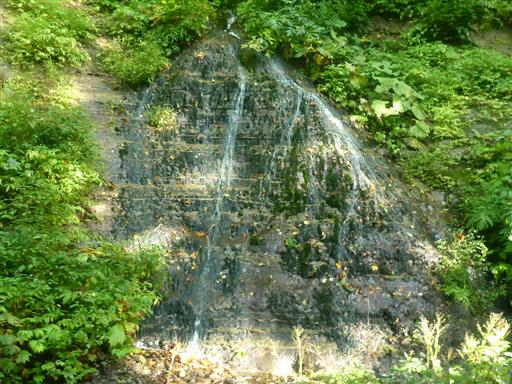
再び車で子ノ口まで移動する。本日の宿泊は民宿 根岸家だ。
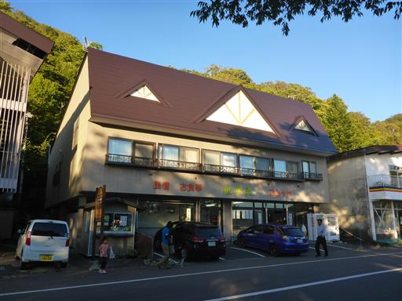
部屋からは十和田湖が見渡せ、なかなかの好立地だ。
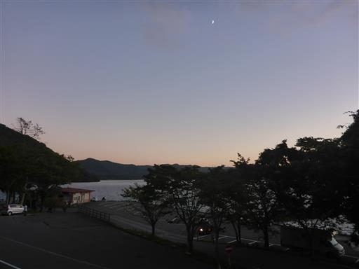